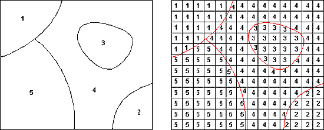

Part 1. Basic concepts
Alexander Sheludkov
18 04 2018
starting picture and epigraph
1.1. Spatial data
Distance - direction - spatial relations - geogrphical position - geographical context
Classroom case
1.2. Spatial data types
Spatial phenomena can generally be thought of as either discrete locations (spatial objects) or as continuous phenomena, for example, elevation, temperature, population density, etc.
Spatial data:
* raster data (continuous phenomena)
* vector data (spatial objects)

Source: http://sedac.ciesin.columbia.edu/data/collection/gpw-v3/methods/grid
In R the main libraries for working with spatial data are sp and raster.
1.2.1 Raster data
A raster divides the area into a grid of equally sized rectangles (cells or pixels). The size of one cell is called the resolution of the raster. All the cells have values (or a missing value) for the variables of interest. Cell value normally represents the average (or majority) value for the area it covers. Cell value refers to an intensity of the process.
ASTER GDEM 2011 elevation data
library(sp)
library(raster)
library(RColorBrewer)
library(lattice)
library(latticeExtra)
library(rasterVis)
# Read raster data
elev <- raster("data/ASTGTM2_N58E056_dem.tif")
elev## class : RasterLayer
## dimensions : 3601, 3601, 12967201 (nrow, ncol, ncell)
## resolution : 0.0002777778, 0.0002777778 (x, y)
## extent : 55.99986, 57.00014, 57.99986, 59.00014 (xmin, xmax, ymin, ymax)
## coord. ref. : +proj=longlat +datum=WGS84 +no_defs +ellps=WGS84 +towgs84=0,0,0
## data source : /Users/aleksandrsheludkov/Desktop/ConfSchoolsSeminars/Perm2018SpringSchool/digital-methods-workshop_Perm/data/ASTGTM2_N58E056_dem.tif
## names : ASTGTM2_N58E056_dem
## values : -32768, 32767 (min, max)The natural coordinate reference system for geographic data is longitude/latitude. In this case x.y show the location of the given point on “spheroid”. However, if we want to make map, we have to transform this three dimensional system to a two dimensional planar system. This transformation is called projection. So, by projection you flatten your original spheroid into the plain surface with some mathematical calculations.
# Plot
levelplot(elev, margin=FALSE, colorkey=list(space='bottom',
labels=list(at=seq(0,350, 50), font=4),
axis.line=list(col='black'),
width=0.75),
par.settings=list(strip.border=list(col='transparent'),
strip.background=list(col='transparent'),
axis.line=list(col='transparent')),
xlab = NULL,
ylab = NULL,
scales=list(draw=FALSE),
col.regions=colorRampPalette(rev(brewer.pal(8, 'RdYlGn'))[1:7]),
alpha.regions = 0.7,
at=seq(0,350, 50),
names.attr="bbb")
Let’s take a look at the same area on OpenStreetMap.
library(leaflet)
# Load leaflet map
leaflet() %>% setView(lng = 56.33, lat = 58.3, zoom = 9) %>% addTiles()Other examples:
Population Density: http://luminocity3d.org/WorldPopDen/
“A Nation divided” by Die Zeit: http://www.zeit.de/feature/german-unification-a-nation-divided
1.2.2 Vector data
The main vector data types are points, lines and polygons. In all cases, the geometry of these data structures consists of sets of coordinate pairs (x, y). Points are the simplest case. Each point has one coordinate pair.
Lines are represented as ordered sets of coordinates (nodes). The actual line segments can be computed by connecting the points.
A polygon refers to a set of closed polylines. The geometry is very similar to that of lines, but to close a polygon the last coordinate pair coincides with the first pair.
# Let’s make some objects of Spatial* class from scratch
longitude <- c(-116.7, -120.4, -116.7, -113.5, -115.5, -120.8, -119.5, -113.7, -113.7, -110.7)
latitude <- c(45.3, 42.6, 38.9, 42.1, 35.7, 38.9, 36.2, 39, 41.6, 36.9)
lonlat <- cbind(longitude, latitude)
pts <- SpatialPoints(lonlat)
# Set the coordinate reference system
crdref <- CRS('+proj=longlat +datum=WGS84')
pts <- SpatialPoints(coords = lonlat, proj4string = crdref)
# To create SpatialLines and SpatialPlygons we can use spLines() and spPlolygons() from raster package
lon <- c(-116.8, -114.2, -112.9, -111.9, -114.2, -115.4, -117.7)
lat <- c(41.3, 42.9, 42.4, 39.8, 37.6, 38.3, 37.6)
lonlat <- cbind(lon, lat)
lns <- spLines(lonlat, crs=crdref)
pols <- spPolygons(lonlat, crs=crdref)
# Create maps
plot(pols, border = "blue", col = "yellow", axes = T) # plot polygon
points(pts, pch = 20, col = "red", cex = 2) # plot points
Spatial object = geometry + attributes
Cartogram - cartodiagrame
Building Age Maps
Chicago: http://buildings.transitized.com
Amsterdam: https://code.waag.org/buildings/#52.3663,4.8883,14
1.3. The case
Perm, 1910
by Sergey Prokudin-Gorsky Source: https://en.wikipedia.org/wiki/Perm#/media/File:Sergei_Mikhailovich_Prokudin-Gorskii_-_General_view_of_the_city_of_Perm_from_Gorodskie_Gorki_(1910).jpg
.jpg){kind=link}
Perm was founded in 1723 during the rule of Tsar Peter the Great. In XIX century the city became a major trade and industrial center. Today the population of the city exceeds 1 million.
We will study the urban growth of Perm by studying the age of the city buildings. This approach is called urban morphology.
Urban morphology refers to "the study of the physical (or built) fabric of urban form, and the people and processes shaping it" (http://www.urbanform.org/glossary.html)
Building Age Map can help us to define a historical core of the city, main directions of the growth, old and new districts. We will study form and spatial structure of the city, revealing history of its formation.
Data sources:
* Open data of the Ministry of Culture of the Russian Federation https://opendata.mkrf.ru/opendata/
* Open reports of housing and comminal servicies companies https://www.reformagkh.ru/myhouse?tid=2299765&sort=name&order=asc&page=1&limit=100
* OpenStreetMap https://www.openstreetmap.org